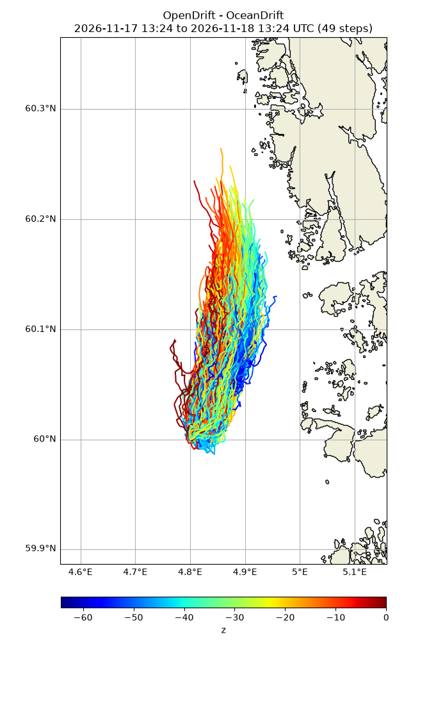
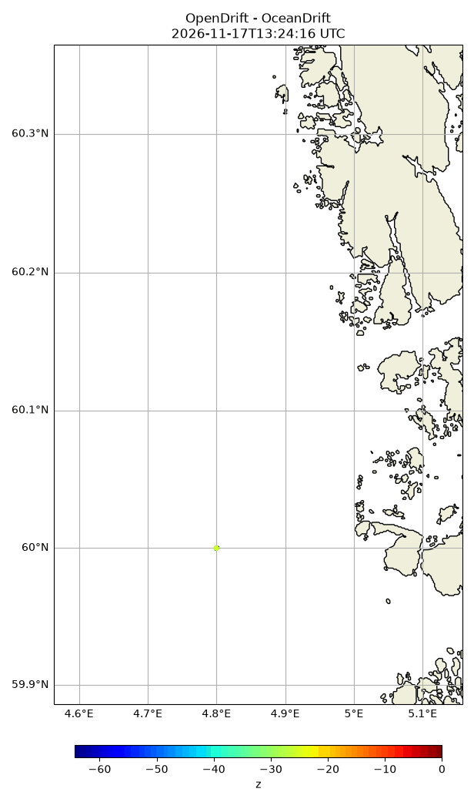

Note
Go to the end to download the full example code.
Drift at different depths
from datetime import datetime, timedelta
import numpy as np
from opendrift.models.oceandrift import OceanDrift
o = OceanDrift(loglevel=20) # Set loglevel to 0 for debug information
13:22:38 INFO opendrift:579: OpenDriftSimulation initialised (version 1.14.11 / v1.14.12-91-g231396a)
Using live data from Thredds
o.add_readers_from_list([
'https://thredds.met.no/thredds/dodsC/fou-hi/norkystv3_800m_m00_be'])
Adding some diffusion
o.set_config('environment:constant:horizontal_diffusivity', 10) # m2/s
Seed 1000 elements at random depths
z = -np.random.rand(2000)*50
o.seed_elements(lon=4.8, lat=60.0, z=z, radius=0, number=2000,
time=datetime.now())
print(o)
13:22:38 INFO opendrift.models.basemodel.environment:204: Adding a global landmask from GSHHG
13:22:46 INFO opendrift.models.basemodel.environment:238: Fallback values will be used for the following variables which have no readers:
13:22:46 INFO opendrift.models.basemodel.environment:241: x_sea_water_velocity: 0.000000
13:22:46 INFO opendrift.models.basemodel.environment:241: y_sea_water_velocity: 0.000000
13:22:46 INFO opendrift.models.basemodel.environment:241: sea_surface_height: 0.000000
13:22:46 INFO opendrift.models.basemodel.environment:241: x_wind: 0.000000
13:22:46 INFO opendrift.models.basemodel.environment:241: y_wind: 0.000000
13:22:46 INFO opendrift.models.basemodel.environment:241: upward_sea_water_velocity: 0.000000
13:22:46 INFO opendrift.models.basemodel.environment:241: ocean_vertical_diffusivity: 0.000000
13:22:46 INFO opendrift.models.basemodel.environment:241: sea_surface_wave_significant_height: 0.000000
13:22:46 INFO opendrift.models.basemodel.environment:241: sea_surface_wave_stokes_drift_x_velocity: 0.000000
13:22:46 INFO opendrift.models.basemodel.environment:241: sea_surface_wave_stokes_drift_y_velocity: 0.000000
13:22:46 INFO opendrift.models.basemodel.environment:241: ocean_mixed_layer_thickness: 50.000000
13:22:46 INFO opendrift.models.basemodel.environment:241: sea_floor_depth_below_sea_level: 10000.000000
===========================
Model: OceanDrift (OpenDrift version 1.14.11)
0 active Lagrangian3DArray particles (0 deactivated, 2000 scheduled)
-------------------
Environment variables:
-----
horizontal_diffusivity
1) constant_reader
-----
land_binary_mask
1) global_landmask
-----
Readers not added for the following variables:
ocean_mixed_layer_thickness
ocean_vertical_diffusivity
sea_floor_depth_below_sea_level
sea_surface_height
sea_surface_wave_significant_height
sea_surface_wave_stokes_drift_x_velocity
sea_surface_wave_stokes_drift_y_velocity
upward_sea_water_velocity
x_sea_water_velocity
x_wind
y_sea_water_velocity
y_wind
---
Lazy readers:
LazyReader: https://thredds.met.no/thredds/dodsC/fou-hi/norkystv3_800m_m00_be
Discarded readers:
===========================
Running model
o.run(duration=timedelta(hours=24), time_step=1800)
13:22:46 INFO opendrift:1921: Skipping environment variable ocean_vertical_diffusivity because of condition ['drift:vertical_mixing', 'is', False]
13:22:46 INFO opendrift:1921: Skipping environment variable ocean_mixed_layer_thickness because of condition ['drift:vertical_mixing', 'is', False]
13:22:46 INFO opendrift:1932: Storing previous values of element property lon because of condition (('general:coastline_action', 'in', ['stranding', 'previous']), 'or', ('general:seafloor_action', 'in', ['previous']))
13:22:46 INFO opendrift:1932: Storing previous values of element property lat because of condition (('general:coastline_action', 'in', ['stranding', 'previous']), 'or', ('general:seafloor_action', 'in', ['previous']))
13:22:46 INFO opendrift:1940: Storing previous values of environment variable sea_surface_height because of condition ['drift:vertical_advection', 'is', True]
13:22:46 INFO opendrift:968: Using existing reader for land_binary_mask to move elements to ocean
13:22:46 INFO opendrift:1000: All points are in ocean
13:22:46 INFO opendrift:2248: 2026-11-17 13:22:38.784056 - step 1 of 48 - 2000 active elements (0 deactivated)
13:22:46 INFO opendrift.readers:67: Opening file with xr.open_dataset
13:22:48 INFO opendrift.readers.reader_netCDF_CF_generic:340: Detected dimensions: {'x': 'X', 'y': 'Y', 'z': 'depth', 'time': 'time'}
13:22:48 INFO opendrift.readers.basereader:175: Variable x_sea_water_velocity will be rotated from eastward_sea_water_velocity
13:22:48 INFO opendrift.readers.basereader:175: Variable y_sea_water_velocity will be rotated from northward_sea_water_velocity
13:22:48 INFO opendrift.readers.basereader:175: Variable x_wind will be rotated from eastward_wind
13:22:48 INFO opendrift.readers.basereader:175: Variable y_wind will be rotated from northward_wind
13:22:53 INFO opendrift:2248: 2026-11-17 13:52:38.784056 - step 2 of 48 - 2000 active elements (0 deactivated)
13:22:53 INFO opendrift:2248: 2026-11-17 14:22:38.784056 - step 3 of 48 - 2000 active elements (0 deactivated)
13:22:55 INFO opendrift:2248: 2026-11-17 14:52:38.784056 - step 4 of 48 - 2000 active elements (0 deactivated)
13:22:55 INFO opendrift:2248: 2026-11-17 15:22:38.784056 - step 5 of 48 - 2000 active elements (0 deactivated)
13:22:57 INFO opendrift:2248: 2026-11-17 15:52:38.784056 - step 6 of 48 - 2000 active elements (0 deactivated)
13:22:57 INFO opendrift:2248: 2026-11-17 16:22:38.784056 - step 7 of 48 - 2000 active elements (0 deactivated)
13:22:59 INFO opendrift:2248: 2026-11-17 16:52:38.784056 - step 8 of 48 - 2000 active elements (0 deactivated)
13:22:59 INFO opendrift:2248: 2026-11-17 17:22:38.784056 - step 9 of 48 - 2000 active elements (0 deactivated)
13:23:02 INFO opendrift:2248: 2026-11-17 17:52:38.784056 - step 10 of 48 - 2000 active elements (0 deactivated)
13:23:02 INFO opendrift:2248: 2026-11-17 18:22:38.784056 - step 11 of 48 - 2000 active elements (0 deactivated)
13:23:04 INFO opendrift:2248: 2026-11-17 18:52:38.784056 - step 12 of 48 - 2000 active elements (0 deactivated)
13:23:04 INFO opendrift:2248: 2026-11-17 19:22:38.784056 - step 13 of 48 - 2000 active elements (0 deactivated)
13:23:06 INFO opendrift:2248: 2026-11-17 19:52:38.784056 - step 14 of 48 - 2000 active elements (0 deactivated)
13:23:06 INFO opendrift:2248: 2026-11-17 20:22:38.784056 - step 15 of 48 - 2000 active elements (0 deactivated)
13:23:08 INFO opendrift:2248: 2026-11-17 20:52:38.784056 - step 16 of 48 - 2000 active elements (0 deactivated)
13:23:08 INFO opendrift:2248: 2026-11-17 21:22:38.784056 - step 17 of 48 - 2000 active elements (0 deactivated)
13:23:14 INFO opendrift:2248: 2026-11-17 21:52:38.784056 - step 18 of 48 - 2000 active elements (0 deactivated)
13:23:14 INFO opendrift:2248: 2026-11-17 22:22:38.784056 - step 19 of 48 - 2000 active elements (0 deactivated)
13:23:17 INFO opendrift:2248: 2026-11-17 22:52:38.784056 - step 20 of 48 - 2000 active elements (0 deactivated)
13:23:17 INFO opendrift:2248: 2026-11-17 23:22:38.784056 - step 21 of 48 - 2000 active elements (0 deactivated)
13:23:18 INFO opendrift:2248: 2026-11-17 23:52:38.784056 - step 22 of 48 - 2000 active elements (0 deactivated)
13:23:18 INFO opendrift:2248: 2026-11-18 00:22:38.784056 - step 23 of 48 - 2000 active elements (0 deactivated)
13:23:20 INFO opendrift:2248: 2026-11-18 00:52:38.784056 - step 24 of 48 - 2000 active elements (0 deactivated)
13:23:20 INFO opendrift:2248: 2026-11-18 01:22:38.784056 - step 25 of 48 - 2000 active elements (0 deactivated)
13:23:24 INFO opendrift:2248: 2026-11-18 01:52:38.784056 - step 26 of 48 - 2000 active elements (0 deactivated)
13:23:24 INFO opendrift:2248: 2026-11-18 02:22:38.784056 - step 27 of 48 - 2000 active elements (0 deactivated)
13:23:26 INFO opendrift:2248: 2026-11-18 02:52:38.784056 - step 28 of 48 - 2000 active elements (0 deactivated)
13:23:26 INFO opendrift:2248: 2026-11-18 03:22:38.784056 - step 29 of 48 - 2000 active elements (0 deactivated)
13:23:29 INFO opendrift:2248: 2026-11-18 03:52:38.784056 - step 30 of 48 - 2000 active elements (0 deactivated)
13:23:29 INFO opendrift:2248: 2026-11-18 04:22:38.784056 - step 31 of 48 - 2000 active elements (0 deactivated)
13:23:30 INFO opendrift:2248: 2026-11-18 04:52:38.784056 - step 32 of 48 - 2000 active elements (0 deactivated)
13:23:30 INFO opendrift:2248: 2026-11-18 05:22:38.784056 - step 33 of 48 - 2000 active elements (0 deactivated)
13:23:32 INFO opendrift:2248: 2026-11-18 05:52:38.784056 - step 34 of 48 - 2000 active elements (0 deactivated)
13:23:32 INFO opendrift:2248: 2026-11-18 06:22:38.784056 - step 35 of 48 - 2000 active elements (0 deactivated)
13:23:34 INFO opendrift:2248: 2026-11-18 06:52:38.784056 - step 36 of 48 - 2000 active elements (0 deactivated)
13:23:34 INFO opendrift:2248: 2026-11-18 07:22:38.784056 - step 37 of 48 - 2000 active elements (0 deactivated)
13:23:37 INFO opendrift:2248: 2026-11-18 07:52:38.784056 - step 38 of 48 - 2000 active elements (0 deactivated)
13:23:37 INFO opendrift:2248: 2026-11-18 08:22:38.784056 - step 39 of 48 - 2000 active elements (0 deactivated)
13:23:39 INFO opendrift:2248: 2026-11-18 08:52:38.784056 - step 40 of 48 - 2000 active elements (0 deactivated)
13:23:39 INFO opendrift:2248: 2026-11-18 09:22:38.784056 - step 41 of 48 - 2000 active elements (0 deactivated)
13:23:41 INFO opendrift:2248: 2026-11-18 09:52:38.784056 - step 42 of 48 - 2000 active elements (0 deactivated)
13:23:41 INFO opendrift:2248: 2026-11-18 10:22:38.784056 - step 43 of 48 - 2000 active elements (0 deactivated)
13:23:43 INFO opendrift:2248: 2026-11-18 10:52:38.784056 - step 44 of 48 - 2000 active elements (0 deactivated)
13:23:43 INFO opendrift:2248: 2026-11-18 11:22:38.784056 - step 45 of 48 - 2000 active elements (0 deactivated)
13:23:45 INFO opendrift:2248: 2026-11-18 11:52:38.784056 - step 46 of 48 - 2000 active elements (0 deactivated)
13:23:45 INFO opendrift:2248: 2026-11-18 12:22:38.784056 - step 47 of 48 - 2000 active elements (0 deactivated)
13:23:46 INFO opendrift:2248: 2026-11-18 12:52:38.784056 - step 48 of 48 - 2000 active elements (0 deactivated)
Plot results with lines and particles colored by depth
print(o)
o.plot(linecolor='z', buffer=.1, show_elements=False)
o.animation(color='z', buffer=.1)

===========================
--------------------
Reader performance:
--------------------
constant_reader
0:00:00.0 total
0:00:00.0 preparing
0:00:00.0 reading
0:00:00.0 masking
--------------------
global_landmask
0:00:00.0 total
0:00:00.0 preparing
0:00:00.0 reading
0:00:00.0 masking
--------------------
https://thredds.met.no/thredds/dodsC/fou-hi/norkystv3_800m_m00_be
0:00:55.9 total
0:00:00.0 preparing
0:00:55.5 reading
0:00:00.9 interpolation
0:00:00.0 interpolation_time
0:00:00.4 rotating vectors
0:00:00.0 masking
--------------------
Performance:
1:07.9 total time
7.4 configuration
0.1 preparing main loop
0.0 moving elements to ocean
1:00.3 main loop
0.1 updating elements
0.0 cleaning up
--------------------
===========================
Model: OceanDrift (OpenDrift version 1.14.11)
2000 active Lagrangian3DArray particles (0 deactivated, 0 scheduled)
-------------------
Environment variables:
-----
horizontal_diffusivity
1) constant_reader
-----
land_binary_mask
1) global_landmask
-----
sea_floor_depth_below_sea_level
sea_surface_height
upward_sea_water_velocity
x_sea_water_velocity
x_wind
y_sea_water_velocity
y_wind
1) https://thredds.met.no/thredds/dodsC/fou-hi/norkystv3_800m_m00_be
-----
Readers not added for the following variables:
sea_surface_wave_significant_height
sea_surface_wave_stokes_drift_x_velocity
sea_surface_wave_stokes_drift_y_velocity
Discarded readers:
Time:
Start: 2026-11-17 13:22:38.784056 UTC
Present: 2026-11-18 13:22:38.784056 UTC
Calculation steps: 48 * 0:30:00 - total time: 1 day, 0:00:00
Output steps: 49 * 0:30:00
===========================
13:24:35 INFO opendrift:4899: Saving animation to /root/project/docs/source/gallery/animations/example_depth_0.gif...
13:24:47 INFO opendrift:3307: Time to make animation: 0:00:13.668932

Total running time of the script: (2 minutes 21.828 seconds)